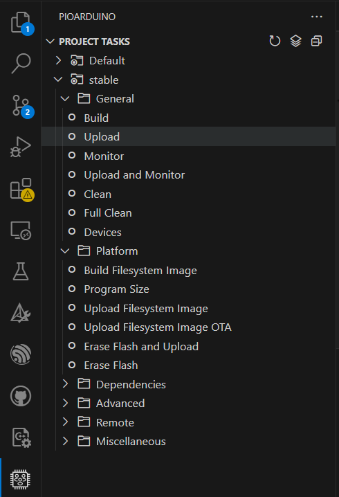

Hardware
The WireSens Toolkit comes with two open-source zero potential readout circuits for interfacing with resistive matrix-based sensors.
The large circuit supports up to 32 row and column electrodes (for 1024 pressure sensing points) and can be ordered/assembled from JLCPCB for $114.10 USD.
- Large Circuit Gerber Files
- Large Circuit BOM
- Large Circuit Componet Placement
- Large Circuit KiCad Source
The small circuit supports 16 row and column electrodes (for 256 pressure sensing points), and can be ordered/assembled from JLCPCB for $48.27 USD
- Small Circuit Gerber Files
- Small Circuit BOM
- Small Circuit Componet Placement
- Small Circuit KiCad Source
Firmware
When your hardware comes, you will need to flash the initial firmware by following the instructions below.
The firmware is available here: Firmware and can be uploaded using vscode.
This library is set up to be developed with pioarduino (built on top of platformio).
Prerequisties
Install pioarduino via vscode: https://github.com/pioarduino/platform-espressif32 (follow steps under IDE preparation)
Get started
Open this folder. The pioarduino extension should recognize it and configure the environment/install necessary packages.
Connect the esp32 and open the vscode command window (Ctrl + shift + P). Search "Set project port" and select the serial port of the connected device accordingly.
The upload button will flash the "nocalibrate.cpp" source to the device (this is the most up-to-date firmware) 
Known Issues
There are compatibility issues with pioarduino being installed simultatenously with a pre-exisitng installation of platformio. If you already have platformio install on your machine, please uninstall it from vscode, delete the .platformio folder (usually under users/<your name>), and install pioarduino as described above.